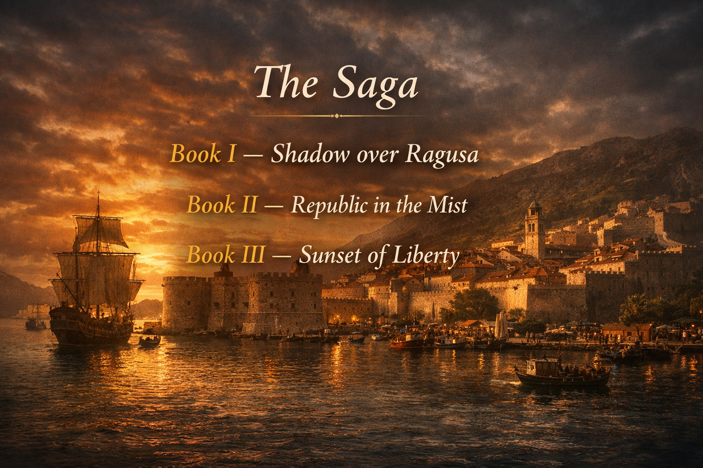

Shadow over Ragusa
The first part of an epic historical saga where love, loyalty, and danger unfold beneath the gathering shadow of war.
Set in the Republic of Ragusa at the height of political tension, this opening volume follows hidden plots, uneasy alliances, and lives drawn into events larger than themselves.
Synopsis
Centuries ago in the Mediterranean Adriatic Sea, the Republic of Ragusa stood at the height of its power. Its independence had been secured through diplomacy, trade, and patriotism. Yet as Venetian ambition rose once more, and dreams of conquering Ragusa returned, a new breed of warship began appearing across Italian ports.
Villa Marinowitch, the residence of the respected council noble Lord Ivano, often welcomed gatherings of peers and their families for food, wine, and conversation. During one such evening, several members of the council and the Archbishop of Ragusa met in the Lord’s library to discuss the troubled political climate. When the discussion ended, Luka, Master of Keys and former guardian of Ragusa, discovered a scroll that had been left behind on the floor. Without seeking it, he and his friend Iva Lukich found themselves drawn into a web of secrecy.
Their search for answers leads them to Lokrum Island, where a hidden launch, a gold-chained rosary, and a naked body concealed beneath broken boards turn suspicion into dread. What begins as a troubling discovery soon opens onto a deeper conspiracy, stretching from a ruined monastery to the very center of government.
As new shipments fill the city and merchants prosper, the balance within Ragusa begins to shift. The Church speaks more openly in favor of Venetian interests, while Lord Ivano grows uneasy. The Admiralty counts ships and cannons. The council struggles to preserve order under Duke Orlando. Beneath elegant gatherings and lantern-lit evenings, tension quietly hardens.
Father Marko, Archbishop of the Holy Church council, carries motives of his own. Messages travel across the sea to unseen agents. Rumors of red-cloaked figures move through the city’s streets and stone corridors. Beyond the walls, the Pope and his ally, the Duke of Venice, begin to shape plans for invasion.
Luka’s patience and Iva’s courage carry them through markets, harbors, and shadowed paths as they uncover ties between clergy, foreign operatives, and hidden political designs. Into this rising storm comes Miho Lupina, a young officer whose sense of duty reflects the strength and discipline of the city he serves.
His arrival brings hope, but also new emotion. As danger closes in, affection grows between Miho and Iva, binding private feeling to public fate. Suspicion deepens. Loyalties are tested. Luka and Iva find themselves at the center of a struggle in which truth, resolve, and cunning may decide the future of a republic standing at the edge of uncertainty.
Shadow over Ragusa blends mystery, romance, and political intrigue in the story of a small maritime republic caught between rival powers. As the story unfolds, Miho and Iva are carried farther than either imagined, all the way to the Sultan’s court, where an impossible choice awaits them.
This is the first title in a historical saga in which fictional characters move through events inspired in part by the real history of the republic that once stood proudly. The story continues in Republic in the Mist and concludes in Sunset of Liberty.
The Saga
